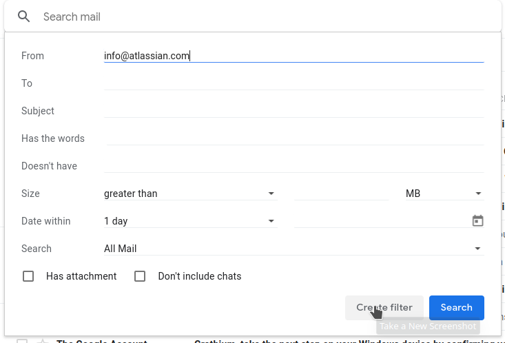

- Click the Advanced Search Button
- Create new Filter
- Add a Rule for the Filter

Add the sender you wish to never send to spam in the "From" search field and click "Create Filter"

Click "Never send it to Spam" and then click "Create Filter"
This will cause all future emails from the sender to be marked as not spam. However, this rule will only apply to new emails. All existing emails from the sender that are currently in your Spam inbox will not be affected.